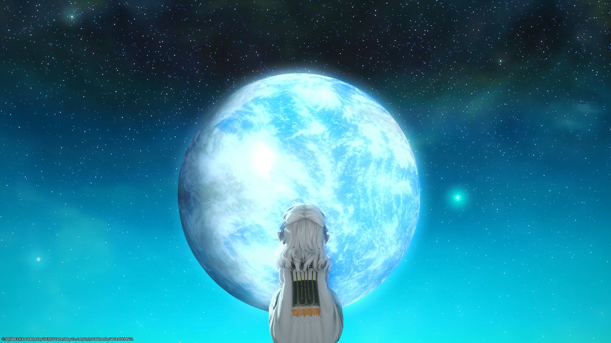
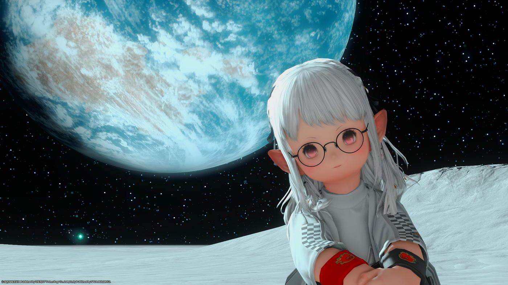
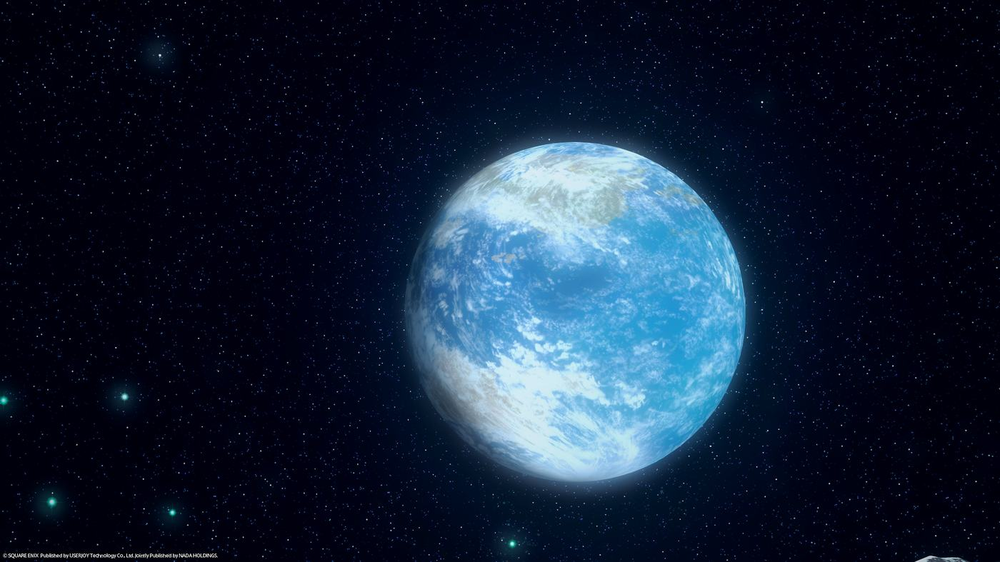

PILOT LOG // MACHINIST

FIG.01 — STANDBYABOUT // 簡介
一個喜歡把世界縮小、再放進相機裡的拉拉肥。平常在艾奧傑亞跑圖的時候,是站在隊伍後排,冷靜扣下板機的機工士;放假的時候,則喜歡跑到沒有人的星球邊緣,吹吹泡泡、拿著拍立得到處按快門,把當下的安靜留下來。
這裡放的,都是我喜歡的瞬間。如果你也喜歡星星、喜歡安靜地看著什麼,歡迎常來逛逛——利維坦見!

「有些風景,只想留給按下快門的那一秒。」
STAR LOG // 星空相簿
13 張在月面與星球之間拍下的瞬間,點擊照片可以放大瀏覽。